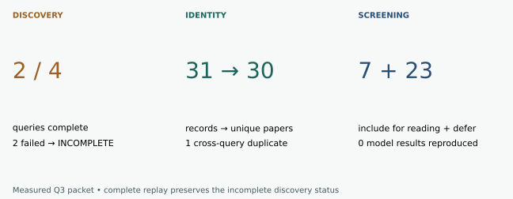

Year 5 · Quarter 3 · Lesson 188
Systematic literature tracking
Your tangible win¶
Build a paper log you can explain and regenerate: what you searched, what you found, why you kept it, and what remains unverified. This protects the mission's eventual research claim from stale baselines and attractive but incomparable results. Core reading: 12 minutes; notebook practice: about 25 minutes.
Observed: 2/4 query traversals complete; 31 retrieved records → 30 unique papers. Overall quarterly collection INCOMPLETE. Frozen-packet replay COMPLETE. Seven abstract-screened reading candidates; 23 deferred. Published model-result reproduction NOT_RUN. New cloud/API spend $0.
Recall before reading¶
From memory, distinguish validation selection from test evaluation, and saved-evidence replay from fresh training. Lesson 178 showed why model names alone do not define a fair comparison. This lesson moves that discipline earlier: before choosing a paper to implement. Lesson 187 showed why a performance result cannot establish every claimed guarantee. Apply that same care when screening sources. This prepares Lesson 189’s draft shortlist; that lesson remains under construction, while Lesson 190 supplies a worked research checkpoint. The collection log below can be understood independently.
1 · Discovery is a measured process¶
A query is an explicit search expression. A snapshot is the bytes returned at a recorded time. A paper identity groups versions of the same work. A screening decision records whether a paper deserves further reading, with a reason. None of these establishes that its model works.
The approved experiment is L188 Q3-2026 Literature Tracking Replay. Search July 1 through September 30, 2026, in UTC. Use four separate all-field searches: the exact phrases “relational foundation model” and “tabular foundation model”, plus RelBench and TabArena. Intersect each with submittedDate:[202607010000 TO 202609302359]; order by submission date, ascending. This finds new submissions matching these expressions. An older paper revised in September belongs in a separate update queue.
The arXiv API manual documents query expressions, pagination and Atom metadata. Atom is a structured XML feed; pagination divides a result set into batches. We request 100 records per page and follow the advertised total. These narrow queries can miss synonyms, unindexed text, papers outside arXiv and relevant work that never names either benchmark. Complete pagination means complete declared-query retrieval, not a systematic review of the whole field.
Worked trace (synthetic). A query reports 203 hits. Page offsets 0, 100 and 200 contain 100, 100 and 3 records. The total is stable, offsets are contiguous and all 203 identities are distinct: traversal passes. Delete the middle page and it fails even if both remaining files have valid hashes. A SHA256 hash detects changed bytes relative to a trusted manifest; it does not certify the truth of the source.
| Check | Valid trace | Counterexample |
|---|---|---|
| Total | 203 on every page | Changes to 204 mid-fetch |
| Offsets | 0 → 100 → 200 | 0 → 200 |
| Identities | 203 distinct papers | Same paper repeated across pages |
| End | 203 received | Only 200 received |
The collector preserves failed HTTP responses, limits retries and refuses to overwrite an existing packet. An unavailable API is missing evidence, not a quarter with zero papers.
2 · Keep identity separate from version¶
Suppose two query responses contain 2607.12345v1 and 2607.12345v2 (synthetic identifiers). Both map to paper identity 2607.12345; the log retains both version URLs and both query origins. Do not count the second as a new independent paper. Conversely, do not strip arbitrary trailing digits: they are part of the identifier.
Store first-submission date, revision date, retrieval date and exact version separately. The first answers “new this quarter?”; the second “has it changed?”; the third “when did we observe this?”. A response collected today may describe a version updated after the quarter. It cannot by itself establish what readers saw on September 30. The API manual's version section is the primary reading for this distinction.
Your notebook implements the identity rule rather than hiding it inside a search library.
3 · Admit a reading candidate; preserve its evidence level¶
The course currency rule has three alternative relevance reasons: a reported best result worth checking, a failure mode the thesis must address, or a baseline a fair comparison needs. “Alternative” matters: a useful failure analysis need not also lead a leaderboard. Application-only and incremental variants normally stay out. Use DEFER when verification or the reading needed for a decision is missing.
Three separately discovered September examples. These are verified primary-page leads, outside the API coverage denominator. Screening is based on their abstracts; method/code audits remain pending.
| Primary source | Reading decision | Next evidence needed |
|---|---|---|
| A JEPA Recipe for Tabular Foundation Models (2026-09-22) | INCLUDE: failure mode | The abstract reports an unfavorable latent-objective comparison and one run per arm. Read training-budget and dataset-identity details before generalizing. |
| Do Tabular Foundation Models Know Physics? Contamination, Units, and the Deterministic Limit (2026-09-02) | INCLUDE: failure mode | The abstract raises unit and deterministic-limit failures. Track as a limitation to investigate, not evidence of failure on relational databases. |
| Xiaomi-TabLDM: A Tabular Foundation Model Technical Report (2026-09-03) | INCLUDE: baseline | A potential tabular comparator with reported benchmark gains. Check artifacts, fitting budgets and evaluation versions before a matched comparison. |
These entries illustrate decisions, not a comprehensive quarter or an endorsement. A paper title and an abstract do not pin preprocessing, training budgets, data versions, seeds or selection rules. Before promoting a candidate to core, record those details and the executable experiment that would test the relevant claim.
4 · A leaderboard is another source with a protocol¶
Use the official RelBench leaderboard and TabArena board. Record the task suite, version, metric direction, aggregation, tuning budget and adaptation setting. A rank can change because methods improve, tasks change, or the evaluation policy changes. Do not subtract ranks across incompatible boards.
A dynamic page's HTML shell or repository README is not necessarily its result table. The receipt distinguishes successful HTTP retrieval from verified score extraction. Our current snapshots do not establish Q3 historical standings. Two comparable dated score snapshots are needed before reporting a change; without them the change stays NOT_ESTABLISHED.
5 · Make the habit cheap enough to keep¶
- Subscribe locally. Import the supplied OPML feed list into your RSS reader. OPML is an interchange file for subscriptions. It contains
cs.LG,cs.AIandstat.MLarXiv feeds. Importing is a learner action; no account subscription or recurring job has been activated here. Category feeds are broader than our four search queries. See the official RSS guide. - Weekly, ten minutes. Collect into a new dated packet; screen titles/abstracts; keep exclude/defer reasons. Check known version URLs separately for revisions. No alerts is not proof of no new work—check the last successful fetch.
- Monthly, one careful reading. Audit a candidate's methods, code/data and comparison protocol. Record “when it may help / when it may fail”, with a primary-source pointer and an explicit unknown.
- Quarterly, one decision. Reconcile verified candidates with the curriculum and research-problem log. An abstract-only candidate is a reading queue item, not an automatic new core lesson.
The default collector below is frozen to Q3 for this named replay. For a later quarter, make a new config and experiment identity rather than overwriting the approved packet. Preserve old logs so later decisions can be explained.
6 · Run the complete approved lane¶

| Query | Received / advertised | Coverage |
|---|---|---|
| relational | 0 / unknown | INCOMPLETE |
| tabular | 0 / unknown | INCOMPLETE |
| relbench | 9 / 9 | COMPLETE |
| tabarena | 22 / 22 | COMPLETE |
Four failed API attempts are retained (HTTP 429 or timeout). Zero records from the two failed queries is not a zero-result finding. All 31 successful records were checked independently, yielding 30 unique identities. Seven are admitted for reading and 23 explicitly deferred; all results remain reported, not reproduced. The successful pages each fit within one 100-record request. Synthetic multi-page tests verify pagination behavior separately. Raw receipt · Independent audit.
Offline replay: authenticate every packet file, rebuild all query counts, merge paper identities, and regenerate decisions. The full implementation is visible in the notebook. Its three learner functions control identity, pagination status and admission decisions. Synthetic CHECK cases exercise these contracts even when the live API is unavailable; they never enter the real paper count.
.venv/bin/python labs/_budget_l188.py .venv/bin/python labs/_replay_l188.py
.venv/bin/python labs/_budget_l188.py .venv/bin/python labs/_verify_l188.py
Fresh collection: this command repeats all four frozen queries into a new directory, including failures. It uses the same aggregate budget ledger.
.venv/bin/python labs/_budget_l188.py .venv/bin/python labs/_collect_l188.py --output /tmp/l188-new-packet
A complete replay of an incomplete packet remains an incomplete collection. No published model result is reproduced by either command.
Open the student notebook, executed solution, paper log, protocol, or printable reference.
Exit · Defend one inclusion and one unknown¶
Submit a 150–250-word note naming the search boundary, one candidate's primary source and relevance, one protocol detail still missing, and the exact next experiment. Explain what would change your inclusion decision. Run all three notebook contracts and attach the regenerated report. Author checks are preparation; your mastery stays PENDING_WRITTEN_DEFENSE until you attempt and defend the work.
Tomorrow: reconstruct the four dates/identities without looking. In one week: screen one new paper and explain whether it changes your proposed baseline. Ask the agent any follow-up question; paste your log entry for feedback on its evidence boundaries.